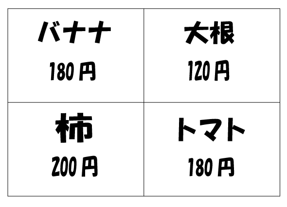

みなさんは、人間がものを認知するときどのように体で処理されているか知っているだろうか。今回は人間が対象を認知するときに、体がどのように反応してどのように処理しているのかを”視覚”に限定して説明していく。その中で認知の仕方から人が認知するときに知らず、知らずに行ってしまう特性を紹介します。
人が対象を認知する時に視覚、嗅覚、聴覚、味覚、触覚を使うことはご存じだろうが、その中で視覚からの情報量が一番多いということは知っていただろうか。 そのことを的確に表わせる実験を簡単にためすことができる。もしかしたら、学校の給食で嫌いなものを食べるときにやったことがある人もいるかもしれない。目隠しをして鼻をつまんでものを食べてみて欲しい。なにを食べているか全くわからない。今回は味覚と視覚を比較しているが聴覚と視覚を比較して実験しているものもある。マガーク効果というものがある。これは省略する。このことから一見視覚と関係ないようなことでも重要であることがわかっただろう。
まずはこちらの画像を見て欲しい。
この画像を見たときに皆さんは最初に何を見ただろうか？このような一枚の紙に複数の対象物が書かれている場合に多くの人は左上から見る人が圧倒的に多い。
チラシなどでこの特性が使われていることが多く一般的に人は左上、右上、左下、右下とZ型に視野を移動する。なので左上に一番売り出したいものを置くと効果的である。
続いて、こちらの画像をみて欲しい。この二つの画像でより笑っているように見えるのはどちらであろうか？
直感的にみて左の方が笑っているように感じるのではないだろうか？
実は顔の部分は一緒で笑っている顔と悲しい顔を半分ずつ重ねたものである。しかし、人は左側にあるものの印象を強く受けるという傾向があるためにそうみえているのだ。
焼き魚なんかも左側に頭が来るように盛り付けるのは、最初に魚の頭が飛び込んできて見栄えが良くなるという効果を期待しているからだろう。
では、なぜこのように左側を優先させてしまうのかと言うと、その秘密は｢視交叉｣が関係している。
目から入った刺激は網膜の視細胞によって電気信号に代わり脳の視覚野に送られる。だが、そこに至るまでに右目と左目の右半分の視野情報は左脳に左目と右目の左半分は右脳に届いている。これを｢視交差｣という。
もっと詳しく知りたい方はこちら
つまり、左視野の情報は右脳で処理されていることになる。人の脳には右脳と左脳では処理されているものが微妙に異なると言われており、一般的に右脳は芸術的なものや直感が支配し、左脳は倫理的な思考を処理しているとされている。
そのことから、直感に強いから左脳よりも右脳の方が先に処理されるというのはあまりにも非科学的である。しかしながら、右脳は視覚情報を元にした作業や人の顔の識別、大きさの分類と形の分類などが得意という結果も出ているために右脳における何らかの機能の影響があると考えられている。ちなみに左視野優先という機能は鳥にも先天的に備わっており、鳥は人と異なり右脳と左脳をつなぐ経路が発達していないのでこのあたりからも、この特性の秘密が明かされるかもしれない。、
まず｢地｣とは意味を持たず背景的と知覚される部分で、｢図｣とは意味を持って見える部分のことである。
このことがどんな法則で判別されるのかについて研究を行ったのがデンマークの心理学者ルビンである。｢ルビンの杯｣は多くの人が知っているだろう。
皆さんも知っているだろうがこの絵は中央の白い部分を図と考えると黒い背景に杯が浮かび、逆に黒い部分を図として見ると2人の顔に見えるようになっている。しかし、杯と人の顔を同時に認知することはできない。これは認知の特性である。ある一方を図としてとらえると一方が地としか認識することができない。
このルビンの杯をベースに研究がなされており、図と地では、図になりやすい傾向のパターンがある
・一般的に面積が小さい方が大きいほうよりも図になりやすい
・上下の関係ならば上にあるものよりも下にあるものの方が図になりやすい。
・水平方向や垂直方向にあるものは、斜めにあるものと比較して図になりやすい
・幅が不規則なものよりも一定の幅のものが図になりやすい。また、規則正しい繰り返しがあるほうが図になりやすい
・左右が非対称なものよりも、対象なものの方が図になりやすい
・寒色よりも暖色の方が図になりやすい。具体的には赤がもっとも図になりやすい。また、明るい色の方が暗い色よりも図になりやすい。